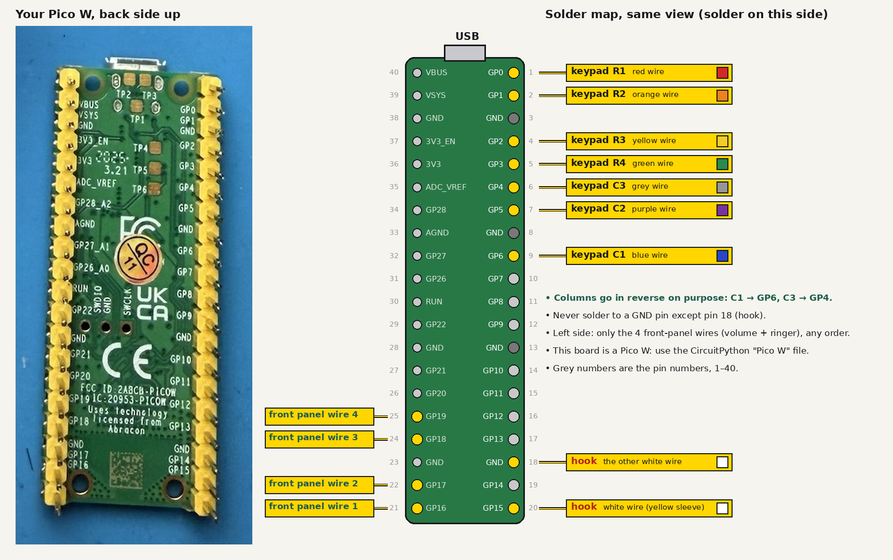

Booth Quick Build
The short version of the booth manual: one phone, one Pi, one screen, one printer, in nine steps. About 3 hours for the first booth and 1.5 hours for each one after. When something needs more explanation, the full manual has the why.

What you need for one booth
- Wall phone (MS-303 beige)
- CanaKit Raspberry Pi 5 Starter Kit PRO (Pi, power supply, case, memory card, cables)
- ARZOPA Z1FC 16.1" screen, plus a USB-C charger for it
- Micro-HDMI to mini-HDMI cable
- Raspberry Pi Pico W, plus female-to-female jumper wires
- Sabrent USB audio adapter and 2 × 3.5 mm pigtail cables
- Rongta 80 mm receipt printer and paper
- 26 AWG wire in several colours, heat-shrink, zip ties with adhesive mounts, 1" (25 mm) clear heat-shrink for the Pico
- Power strip
Tools: soldering iron set to 350 °C (660 °F), solder, multimeter, wire strippers, flush cutters, heat gun, small screwdriver, tape and a marker.
Open the phone
15 minutes
- Unscrew the metal back plate and lift the front shell away gently.
- Unplug the white plug from the front panel (ringer and volume sliders). It's the only plug; keep its 4 wires for the volume control. Every other wire gets cut.
- Take a photo before you cut anything. Always cut wires close to the main board, so you keep the most length.

Handset to audio adapter
20 minutes
Cut the four handset wires at the board's M−, M+, R+, R− pads. On the MS-303, black and yellow are the earpiece and red and green are the mic.
| Handset wire | Pad | Pigtail wire | Plug part |
|---|---|---|---|
| Earpiece pigtail (🎧 jack) | |||
| Black | R+ | Red | tip |
| Yellow | R− | Black | sleeve |
| Mic pigtail (🎤 jack) | |||
| Red | M+ | Red | tip |
| Green | M− | Black | sleeve |
Each pigtail's white wire (the ring) isn't used: snip it short and cover it with heat-shrink. Heat-shrink each joint, then a bigger piece of ½" (13 mm) heat-shrink over each finished splice.
Before soldering: black to yellow reads 100–300 Ω on the meter. After: record and play back through the handset. Mic very quiet? Swap red and green.
Hook switch
10 minutes
- The hook switch board (printed MS-303 HK) has two white wires running to HK on the main board. Cut both close to the main board and strip 3 mm (⅛ in).
- Meter on beep, probes on the two wires. Press the plunger, then let go. Note whether it beeps pressed or released.
Beeps when released (handset lifted): nothing to change. Beeps when pressed: in the Pico's code.py, set OFF_HOOK_READS_HIGH = True.
Keypad and hook to the Pico
30 minutes
- The board prints the keypad map beside its ribbon: C3, C2, C1, R4, R3, R2, R1. Put a marker dot on the R1 wire, then cut the ribbon close to the board.
- Turn the Pico underside up (the side where the pins stick out and the pin names are printed), USB at the top. Pins 1–20 run down the right edge.
- Connect each wire as in the map. For the prototype, solder each wire to half a female-to-female jumper and push it onto the pin; hot-glue the rows once it all works.
| Wire | R1 | R2 | R3 | R4 | C1 | C2 | C3 | Hook | Hook |
|---|---|---|---|---|---|---|---|---|---|
| Colour | red | orange | yellow | green | blue | purple | grey | white | white |
| Pico | GP0 | GP1 | GP2 | GP3 | GP6 | GP5 | GP4 | GND | GP15 |
| Pin | 1 | 2 | 4 | 5 | 9 | 7 | 6 | 18 | 20 |
- Volume: the front panel's 4 wires (ringer + volume sliders) go to GP16, GP17, GP18, GP19 (pins 21, 22, 24, 25), in any order. Then move the VOLUME slider with the Pico on the laptop and tell Claude what it reports; it fills in the setting (full manual, Part 9).

Pins are only 2.54 mm (0.1 in) apart. After each joint, touch the meter to the neighbouring pins: they must not beep together.
Load the Pico
10 minutes
- Hold the white BOOTSEL button, plug the Pico into a laptop, then let go. A drive called RPI-RP2 appears.
- From circuitpython.org, download CircuitPython for Pico W (or Pico if the board doesn't say "Pico W") and drag the
.uf2file onto RPI-RP2. It comes back as CIRCUITPY. - Copy everything in
booth/pico/onto CIRCUITPY:code.py,keymonitor.py,keyfinder.pyand thelibfolder.
Lift the handset: the Pico's small LED lights. Open a text editor and press each key: it types its digit. The settings already match the MS-303 wired as in step 4. A wrong digit? Tell Claude what each key typed; it's a one-line fix.
Close up the phone
15 minutes
- Once everything works, slide the Pico into the clear 1" heat-shrink with the USB end open, and shrink it with the heat gun on low. This stops it shorting on the metal back plate.
- Stick the Pico and the Sabrent inside with adhesive mounts, away from the metal. Add a screw through each mount where the plastic allows.
- Zip-tie the wires next to the Pico, so a tug pulls on the ties and never on a solder joint.
- Run both USB cables out through the old LINE jack hole, anchor them inside with a zip tie, and close the phone.
Set up the Pi
30 minutes, mostly waiting
- Assemble the CanaKit: heatsink on the chip, fan plugged into the socket marked FAN, case closed.
- Plug in the screen (micro-HDMI to mini-HDMI), a keyboard and Ethernet. Plug in power last.
- When the desktop appears, open Terminal and type these lines, pressing Enter after each:
git clone -b claude/landline-demo-booth-setup-05lxch https://github.com/lizzieoh/hello-world.git
cd hello-world/booth/native
./setup-native.sh 1
sudo rebootThe 1 is the booth number: use 2, 3 or 4 on the other Pis. Paste the fal key when it asks (the letters don't show; that's normal). The self-test at the end should say every test passed.
Connect everything
10 minutes
| From | Plug into |
|---|---|
| Phone: Sabrent USB cable | Pi USB port |
| Phone: Pico USB cable | Pi USB port |
| Printer USB cable | Pi USB port |
| Screen power | Its own USB-C charger, never the Pi |
| Pi, screen and printer chargers | Power strip |
Test call
15 minutes
- Lift the handset: you hear a ring, a click, the greeting, then a beep
- Say a prompt: "please hold" and music play, then the video appears, muted
- Press 2: sound on. Press 3: a new take. Press 0: the receipt prints and cuts.
- Hang up: the screen loops recent videos
- Unplug the screen's power and plug it back in: it switches itself back on
- Pull the Ethernet while on hold: you hear a busy signal. Plug it back in: the next call works.
- 20 calls in a row with no problems: this booth is done
Quick fixes
| Problem | Fix |
|---|---|
| Something's stuck | Hold * for 3 seconds. The app restarts in a few seconds. |
| Time to power off | Hold # for 5 seconds, wait for the Pi's green light to stop blinking, then unplug. |
| Red dot on the screen | The network is down. Check the router. |
| "Printer offline" | Replug the printer's USB cable, then press 0 again. |
| A booth is dead | Swap in the spare. Any booth's memory card works in any Pi. |